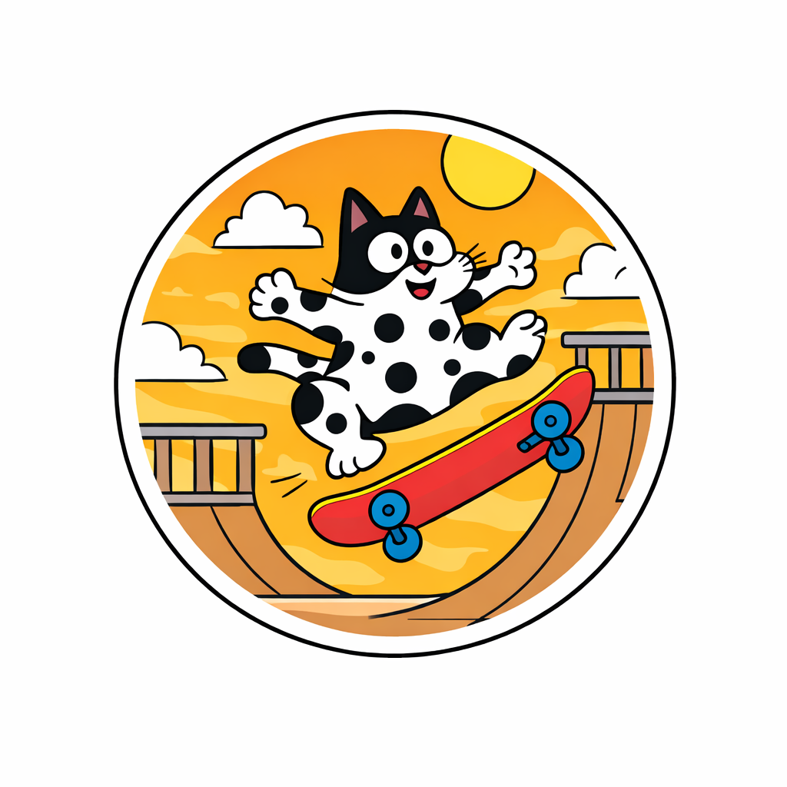

Independent research on cryptocurrency markets, market structure, and systematic trading. Founded by Oleg Arefev — Chief Visionary Officer, Partner at Legal Kornet.
Flagship research log: Searching for Edge — testing published trading strategies (momentum, trend, carry, reversal, grid) against real Binance data. Each note follows the same pipeline: literature review → replication → gross → net-of-costs → verdict. Closed and negative results are published alongside positive ones.